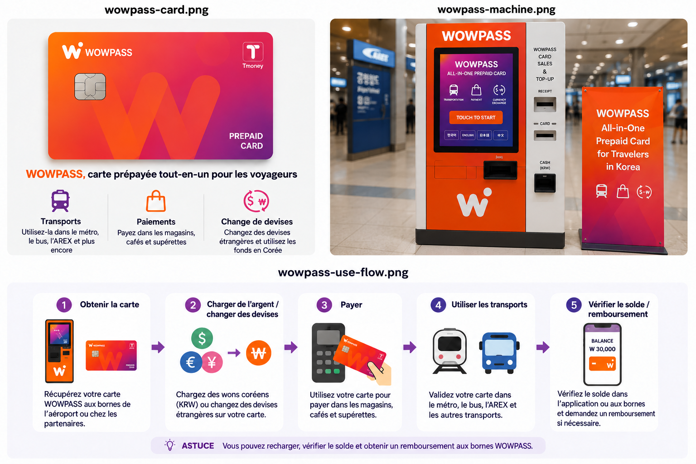
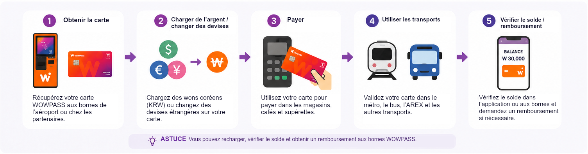

WOWPASS peut être utile si vous souhaitez réunir une carte de paiement prépayée coréenne, le change de devises et T-money sur une seule carte physique. Mais l’idée du « tout-en-un » peut prêter à confusion : l’argent utilisé dans les magasins et celui destiné aux bus et au métro correspondent à deux soldes séparés.
Si vous avez uniquement besoin des transports en commun, une carte T-money classique est généralement plus simple. WOWPASS devient plus intéressante si vous souhaitez aussi disposer d’un solde de paiement coréen, recharger avec des devises acceptées, retirer des espèces ou gérer votre carte dans l’application.

Le paiement et les transports utilisent la même carte physique, mais pas le même solde.
Ce que permet réellement WOWPASS
WOWPASS réunit plusieurs services que les visiteurs étrangers utilisent souvent séparément en Corée.
Le solde WOWPASS sert à régler les achats courants comme une carte prépayée. La carte intègre également une fonction T-money pour les bus et le métro. Les bornes WOWPASS compatibles permettent de changer des espèces étrangères et de charger le montant obtenu ; l’application propose d’autres fonctions de recharge et de gestion de la carte.
Cette combinaison fait son intérêt, mais elle est aussi à l’origine de la plupart des confusions.
Le paiement et les transports utilisent la même carte physique, mais pas le même solde. Charger 50 000 ₩ sur le solde de paiement WOWPASS ne vous donne pas 50 000 ₩ de crédit pour le métro. Il faut recharger T-money séparément.
Une fois cette distinction comprise, WOWPASS est assez simple à utiliser. Si vous vous attendez à payer absolument tout avec un seul solde, le premier portillon de métro risque de vous réserver une mauvaise surprise.
Une carte, deux soldes
C’est le point à comprendre avant de charger de l’argent sur la carte.
Les achats courants sont débités du solde prépayé WOWPASS ; les transports utilisent le solde T-money intégré.
Solde WOWPASS
Solde T-money
Usage principal
Magasins, restaurants et autres paiements par carte sur place
Bus, métro et transports compatibles
Comment payer
Insérez la puce de la carte dans le terminal de paiement
Passez la carte devant le lecteur de transport
Comment recharger
Borne WOWPASS ou moyens de recharge mobile compatibles
Recharge T-money séparée
Recharger l’autre solde ajoute-t-il de l’argent ici ?
Non
Non
Fonctions de l’application
Solde, opérations et gestion de la carte
Consultation du solde et possibilités actuelles de recharge dans l’application
Le guide de WOWPASS distingue explicitement ces deux soldes. Les achats courants sont débités du solde prépayé WOWPASS ; les transports utilisent le solde T-money intégré.
En pratique, un paiement accepté dans un magasin ne vous renseigne pas sur l’argent restant pour le métro. De même, un solde T-money bien approvisionné ne dit rien du solde de paiement.
Si un portillon de métro indique un solde de transport insuffisant, recharger uniquement le solde de paiement WOWPASS ne résoudra pas le problème.
Obtenir une carte WOWPASS
Vous pouvez obtenir une carte WOWPASS selon les modalités de réservation et de délivrance proposées. Distinguez toutefois le retrait à l’aéroport de la délivrance par une borne WOWPASS : tous les points de retrait à l’aéroport ne sont pas des bornes en libre-service.
En août 2026, les pages officielles de réservation proposent des points de retrait aux terminaux 1 et 2 de l’aéroport d’Incheon, notamment dans des supérettes CU de l’aéroport. Elles proposent aussi de réserver une carte à récupérer sur une borne dans des stations de métro, des hôtels, des supérettes et d’autres lieux. Pour les options indiquées, les pages officielles affichent actuellement un prix normal de 6 000 ₩ et un prix sur réservation de 5 500 ₩. Ces tarifs et modalités de retrait peuvent évoluer : fiez-vous à la page de réservation actuelle plutôt qu’à une ancienne capture d’écran ou à un article de blog.
Après avoir reçu la carte, commencez par l’enregistrer dans l’application WOWPASS plutôt que de charger immédiatement une grosse somme. Repérez le solde que vous rechargez, puis ajoutez le montant que vous pensez utiliser.
Cet enregistrement dans l’application devient bien plus important si vous perdez ensuite la carte.
Vous pouvez obtenir une carte WOWPASS selon les modalités de réservation et de délivrance proposées. Distinguez toutefois le retrait à l’aéroport de la délivrance par une borne WOWPASS : tous les points de retrait à l’aéroport ne sont pas des bornes en libre-service.
Recharger la carte et changer des devises
Deux opérations peuvent facilement être confondues : changer des espèces étrangères sur une borne WOWPASS et recharger la carte dans l’application.
WOWPASS annonce actuellement la recharge en espèces dans 16 devises. Son service de recharge mobile accepte aussi des cartes internationales et des portefeuilles électroniques ; le site officiel mentionne notamment Mastercard, JCB et Visa via PayPal.
Lorsque vous utilisez des espèces étrangères acceptées par une borne WOWPASS, le service les convertit en wons coréens et crédite le solde de paiement WOWPASS du montant obtenu.
La recharge mobile fonctionne autrement. Vous ne déposez pas de billets étrangers dans une borne : vous rechargez depuis l’application avec un moyen de paiement international compatible.
Cette distinction compte pour comparer les coûts. Le taux de change et les frais de recharge ne recouvrent pas nécessairement la même chose. Avant de charger une somme importante, vérifiez le montant réel en wons que vous recevrez et les frais indiqués pour le moyen choisi. Ne supposez pas que toutes les façons de recharger WOWPASS coûtent la même chose.

Deux opérations peuvent facilement être confondues : changer des espèces étrangères sur une borne WOWPASS et recharger la carte dans l’application.
Payer avec WOWPASS
Pour les achats courants, WOWPASS fonctionne davantage comme une carte prépayée coréenne que comme une carte de transport.
Selon le guide officiel, le solde de paiement WOWPASS est utilisable chez les commerçants physiques en Corée qui acceptent les cartes de crédit ou de débit coréennes, y compris dans certains endroits où une carte étrangère peut être refusée. Pour ces achats, les instructions officielles demandent d’insérer la puce de la carte dans le lecteur du commerçant.
Le geste est donc différent de celui utilisé pour prendre le métro.
Dans un magasin, un restaurant ou un café, vous dépensez le solde WOWPASS. Dans un bus ou le métro, vous passez la carte devant le lecteur et utilisez le solde T-money séparé.
Gardez aussi cette distinction en tête devant une borne de commande. La présence d’un symbole sans contact ne signifie pas que chaque paiement WOWPASS doit se faire en passant la carte devant le lecteur comme avec T-money.
La communication de WOWPASS emploie parfois des formulations très larges sur son acceptation. Pour préparer votre voyage, considérez-la comme une carte prépayée coréenne destinée aux paiements sur place. Elle ne garantit pas que tous les paiements en ligne, sites étrangers ou terminaux particuliers l’accepteront.
Si un paiement chez un commerçant échoue, gardez un autre moyen de paiement à disposition au lieu de transférer sans cesse de l’argent entre les soldes.
Retirer des wons en espèces
WOWPASS permet également de récupérer une partie du solde de paiement en espèces coréennes sur les bornes WOWPASS compatibles.
Le site officiel indique actuellement un retrait maximal de 100 000 ₩ par opération, avec 1 000 ₩ de frais par retrait. Il précise aussi que les retraits peuvent être répétés. Ces conditions de service peuvent évoluer : vérifiez-les de nouveau avant de vous y fier pour un prochain voyage.
Il s’agit bien de retirer le solde WOWPASS par l’intermédiaire du réseau WOWPASS. Ce n’est pas l’équivalent d’un compte bancaire coréen donnant un accès sans restriction aux distributeurs automatiques du pays.
Ce service peut être utile si vous avez ponctuellement besoin d’espèces coréennes. En revanche, compter sur WOWPASS pour tous vos besoins bancaires et tous vos retraits pendant un long séjour est moins pertinent.
La fonction T-money intégrée à WOWPASS
La fonction de transport intégrée à WOWPASS est bien une fonction T-money.
Le guide officiel de WOWPASS indique que le solde T-money est utilisable dans le métro et les bus coréens et demande de passer la carte devant les lecteurs de transport. L’entreprise met aussi actuellement en avant d’autres usages de transport, notamment dans les taxis compatibles.
Le mot à retenir est « solde ».
Avoir une carte WOWPASS dans votre portefeuille ne signifie pas que sa partie transport est rechargée. Le solde T-money doit disposer de ses propres fonds suffisants.
L’application permet actuellement de consulter le solde de transport et de le recharger lorsqu’il devient faible.
Si vous prenez le train et le bus tous les jours, c’est pratique : une seconde carte T-money physique est normalement inutile. Mais cette commodité ne fusionne pas les soldes. Vous devez toujours savoir quel argent sert à quelle partie du voyage.
À quoi sert vraiment l’application WOWPASS ?
En pratique, l’application est bien plus utile qu’elle ne le paraît au premier abord.
Elle permet de consulter le solde de paiement WOWPASS et les opérations. L’entreprise propose actuellement des notifications de paiement en temps réel dans l’application. Vous pouvez aussi y consulter le solde de la carte de transport intégrée et le recharger.
La fonction la plus importante est moins visible : la sécurité de la carte.
WOWPASS indique qu’une carte perdue ou volée peut être suspendue dans l’application pour protéger le solde WOWPASS, puis remplacée.
C’est une bonne raison d’enregistrer la carte physique dans l’application dès que vous la recevez, sans attendre un problème.
L’application permet aussi actuellement de transférer un solde entre utilisateurs WOWPASS. Cela peut être pratique entre amis en voyage, mais reste secondaire par rapport au suivi des dépenses, à la gestion de la carte et à la protection du solde de paiement.
En cas de perte de la carte
Perdre une carte de voyage est agaçant. La perdre avec une somme importante prépayée dessus est plus préoccupant.
Si votre carte WOWPASS disparaît, commencez par ouvrir l’application et la suspendre. WOWPASS indique actuellement que cela protège le solde WOWPASS restant et permet de faire délivrer une carte de remplacement.
Ne supposez pas que toutes les fonctions de la carte se récupèrent de la même manière. Les instructions de WOWPASS distinguent le solde prépayé et T-money. Lors du remplacement d’une carte perdue, consultez les consignes d’assistance en vigueur concernant le solde de transport.
C’est une raison supplémentaire de ne pas charger beaucoup plus d’argent que vous ne pensez en utiliser.
Avant de quitter la Corée
À la fin du voyage, une carte WOWPASS peut encore contenir de l’argent à deux endroits : sur le solde de paiement WOWPASS et sur le solde de transport T-money.
Il ne faut pas considérer ces deux soldes comme un remboursement unique.
Le guide officiel de WOWPASS prévoit des fonctions distinctes pour retirer le solde WOWPASS et se faire rembourser T-money. Cela correspond aux deux soldes séparés utilisés pendant le voyage.
Avant votre dernier trajet vers l’aéroport, vérifiez les deux soldes séparément.
Si vous avez encore besoin du métro ou d’un transport vers l’aéroport, conservez assez d’argent sur T-money pour ce trajet. S’il reste trop d’argent sur le solde de paiement WOWPASS, consultez les instructions de retrait actuelles avant d’arriver à l’aéroport.
Évitez d’attendre les dernières minutes avant le départ. Le point de remboursement ou de retrait d’espèces peut ne pas se trouver là où vous l’imaginez.
Les problèmes qui donnent l’impression que WOWPASS est compliquée
« J’ai chargé de l’argent sur WOWPASS, mais le métro indique un solde insuffisant. »
Vous avez probablement rechargé le solde de paiement WOWPASS et non le solde T-money intégré. Ils sont séparés. Consultez le solde de transport dans l’application et rechargez-le si nécessaire.
« Je pensais trouver une borne WOWPASS à l’aéroport, mais je n’en vois pas. »
Le retrait d’une carte à l’aéroport et sa délivrance par une borne en libre-service ne suivent pas toujours la même procédure. Les pages officielles de réservation précisent les points de retrait à l’aéroport ainsi que les options distinctes de retrait sur borne après réservation. Utilisez le lieu indiqué sur votre propre réservation plutôt qu’une ancienne photo de borne.
« Je pensais que déposer des espèces étrangères et recharger dans l’application revenait au même. »
Les deux opérations ajoutent de l’argent utilisable, mais par des moyens différents. Les espèces étrangères acceptées passent par le change sur borne ; les cartes internationales et les portefeuilles électroniques compatibles passent par les options de recharge mobile proposées.
« La carte a fonctionné dans le métro, mais le paiement a échoué dans un magasin. »
Le métro a utilisé T-money. Le magasin a utilisé la fonction prépayée WOWPASS. Vérifiez d’abord le bon solde. S’il est suffisant et que le commerçant ne parvient toujours pas à accepter la carte, utilisez un autre moyen de paiement. Un trajet payé ne garantit pas que tous les achats en magasin passeront.
« J’ai passé la carte devant le lecteur d’un magasin et rien ne s’est produit. »
Pour les achats ordinaires avec WOWPASS, les instructions officielles demandent d’insérer la puce dans le lecteur. Le passage devant le lecteur est le geste utilisé dans les transports.
« J’ai perdu la carte. »
Suspendez-la dans l’application dès que possible. WOWPASS propose actuellement la suspension et le remplacement de la carte pour protéger le solde WOWPASS. Suivez ensuite la procédure d’assistance en vigueur pour le remplacement et vérifiez le traitement du solde T-money séparé.
« Je quitte la Corée avec de l’argent sur les deux soldes. »
Traitez-les séparément. Le solde de paiement WOWPASS suit sa propre procédure de retrait, et T-money sa propre procédure de remboursement. Vérifiez les deux avant votre dernier trajet vers l’aéroport.
À qui WOWPASS convient-elle ?
WOWPASS est surtout utile lorsque plusieurs besoins se recoupent.
Si vous prévoyez de prendre les transports en commun, souhaitez une carte prépayée coréenne pour les achats courants et cherchez aussi un moyen pratique de changer des espèces étrangères acceptées ou de recharger depuis l’application, réunir ces services sur une seule carte physique peut avoir un réel intérêt.
Elle peut aussi convenir si vous préférez consacrer un budget précis à votre voyage sur un solde prépayé plutôt que d’utiliser votre principale carte de crédit étrangère pour chaque petit achat.
L’intérêt est beaucoup plus limité si votre carte étrangère fonctionne déjà de façon fiable en Corée et que vous avez seulement besoin d’une carte de transport. Dans ce cas, WOWPASS ajoute une application, un solde et un fonctionnement de carte à comprendre.
Pour trois jours à Séoul avec uniquement des trajets en métro, davantage de fonctions n’apporte pas automatiquement un avantage.
WOWPASS ou une carte T-money classique ?
Une carte T-money classique remplit une fonction essentielle avec très peu de préparation : payer les transports.
WOWPASS intègre T-money à une offre de paiement plus large. Cela peut éviter de transporter une carte de paiement et une carte de transport séparées. Mais cette commodité a surtout de l’intérêt si vous comptez aussi utiliser les fonctions de paiement, de change, de retrait ou de gestion dans l’application.
Si vous hésitez encore entre ces deux cartes, consultez le comparatif T-money et WOWPASS pour une comparaison complète, sans la répéter ici.
Si vous savez déjà que vous avez uniquement besoin des transports en commun : Guide T-money
Questions fréquentes sur WOWPASS
WOWPASS et T-money, est-ce la même chose ?
Non. WOWPASS est une carte de paiement prépayée destinée aux visiteurs étrangers, qui intègre aussi une fonction de transport T-money. Le solde de paiement WOWPASS et le solde T-money sont distincts.
Peut-on utiliser WOWPASS dans les bus et le métro ?
Oui. La fonction T-money intégrée permet de prendre les transports en commun coréens, mais son solde doit être rechargé séparément du solde de paiement WOWPASS.
Faut-il une autre carte T-money si l’on possède WOWPASS ?
En général, non, pour les trajets ordinaires en bus et en métro. WOWPASS intègre déjà la fonction de transport T-money. Une carte T-money classique peut toutefois être plus simple si vous avez uniquement besoin des transports.
L’argent chargé sur WOWPASS permet-il de prendre le métro ?
Pas automatiquement. L’argent du solde de paiement WOWPASS et celui du solde T-money sont séparés. Vérifiez le solde de transport avant de compter sur la carte pour un trajet.
Peut-on payer avec WOWPASS dans les magasins et les restaurants ?
Selon le guide officiel, le solde de paiement WOWPASS est utilisable chez les commerçants physiques en Corée qui acceptent les cartes de crédit ou de débit coréennes. Pour un paiement ordinaire, il faut insérer la puce de la carte dans le terminal.
Peut-on utiliser WOWPASS pour des achats en ligne ?
Un paiement WOWPASS accepté en magasin ne garantit pas que la carte sera acceptée sur un site coréen. Les instructions officielles portent clairement sur les paiements chez les commerçants physiques. Pour les difficultés de paiement sur les sites coréens, consultez le guide Korea Inside consacré aux paiements en ligne.
Peut-on changer des espèces étrangères avec WOWPASS ?
WOWPASS permet actuellement de recharger la carte en espèces dans 16 devises, selon les règles en vigueur pour les bornes et les devises. Vérifiez le montant obtenu au change avant de valider l’opération.
Peut-on recharger WOWPASS avec une carte étrangère ?
WOWPASS annonce actuellement la recharge mobile par carte internationale et portefeuille électronique. Son site officiel mentionne Mastercard, JCB et Visa via PayPal. Vérifiez les moyens disponibles et les frais dans l’application avant de charger une somme importante.
Peut-on obtenir WOWPASS à l’aéroport d’Incheon ?
Les pages officielles de réservation proposent actuellement un retrait de carte aux terminaux 1 et 2 de l’aéroport d’Incheon. Rendez-vous au point de retrait indiqué sur votre réservation ; ne partez pas du principe qu’une borne en libre-service vous attend près de votre porte d’arrivée.
Combien coûte la carte WOWPASS ?
Lors de cette vérification en août 2026, les pages officielles de réservation à l’aéroport d’Incheon affichent un prix normal de 6 000 ₩ et un prix de 5 500 ₩ pour l’option proposée sur réservation. Les prix et les promotions peuvent changer.
Peut-on retirer des wons en espèces avec WOWPASS ?
Oui. Selon le site officiel, les bornes WOWPASS permettent actuellement de retirer des wons depuis le solde de la carte, dans la limite de 100 000 ₩ par retrait, avec 1 000 ₩ de frais. Vérifiez de nouveau ces règles avant votre voyage, car les conditions du service peuvent changer.
Que faire en cas de perte de la carte ?
Si la carte est enregistrée dans l’application, WOWPASS permet actuellement de la suspendre pour protéger le solde WOWPASS et propose une procédure de remplacement. Consultez les instructions d’assistance en vigueur pour connaître le traitement du solde T-money, qui est distinct.
WOWPASS est-elle utile pour un court séjour ?
Elle peut l’être, mais votre façon de payer compte davantage que la durée du séjour. Si vous souhaitez réunir paiement, transports et change, elle peut être utile même pour un court voyage. Si vous avez seulement besoin des bus et du métro, une carte T-money classique est plus simple.
Les taux, frais, points de retrait, moyens de recharge acceptés et règles du service peuvent changer. Pour tout ce qui concerne votre argent ou une borne précise, fiez-vous à l’application WOWPASS ou au site officiel actuels plutôt qu’à une ancienne capture d’écran ou un récit de voyage.